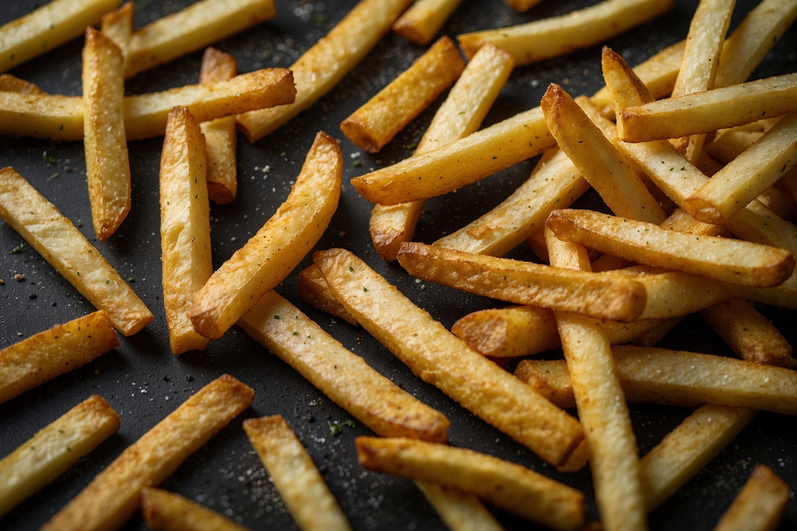

Home
Chips

Description
Fried chips are crispy slices or sticks of potato, deep-fried until golden and crunchy, and lightly salted.
Ingredients
- Potatoes
- Oil for frying
- Salt
Steps
- Peel and cut the potatoes into slices or sticks.
- Heat oil in a pan or fryer.
- Fry the potatoes until golden and crispy.
- Drain excess oil and sprinkle with salt.